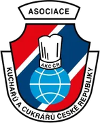
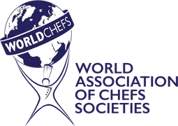
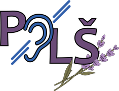

O nás
Naše láska k jídlu!
Vařím pro vaše chuťové buňky!
O nás
Za každým talířem je šéfkuchař Michael Veselý
Michael je vyučený kuchař z Hradce Králové. Jeho profese ho vede k tomu, aby sbíral recepty z celého světa a přinášel je na váš stůl. Tak vznikl YesChef.
Dnes vede kuchařský tým, pracuje v týmu slyšících a podniká pod vlastní značkou. Vaří tak, aby to byla jedna z nejlepších věcí, které jste kdy jedli.
- Menu sestavené přesně podle vás
- Kompletní servis od přípravy po úklid
- Inspirace z kuchyní celého světa
- Akce v ČR i v zahraničí
Vzdělání a zkušenosti
Řemeslo, které má základ
1. místo v národní soutěži, kategorie Kuchař junior
XXV. ročník národní soutěže kuchařského a cukrářského umění, Kongresové centrum Aldis, Hradec Králové. Michael zvítězil mezi zhruba 120 přihlášenými.
Vyučený kuchař-číšník
Střední škola v Hradci Králové. Mezi jeho učitele patřil Lukáš Ende, bronzový medailista z mezinárodní kuchařské olympiády v Německu.
Czech Carving Studio
Kurz vyřezávání ovoce a zeleniny, Hradec Králové, září 2019. Ozdoby, které na rautu nikdo nepřehlédne.
Hotel Mandarin Oriental Prague
Certifikát z kurzu etikety a společenského chování Elišky Haškové Coolidge v Praze.
Vedoucí kuchařského týmu
Vede tým v kuchyni a pracuje v týmu slyšících. Zkušenosti z provozu přenáší do každé akce YesChef.
Napsali o nás
Michael v médiích
Yes Chef – seznamte se s Michaelem Veselým
Představení mladého kuchaře, jeho studia v Hradci Králové a začátků YesChef na sociálních sítích.
Číst článek iDětskýsluch.cz · 9. 5. 2024Práce s lidmi mě baví
Michael popisuje svou cestu k profesionálnímu vaření a to, co ho na práci v kuchyni baví.
Číst článek SNNČR · duben 2020Michael: Díky tlumočníkům znakového jazyka mám stejné informace jako slyšící
Rozhovor o studiu, plánech do budoucna a o tom, jak mu pomáhají tlumočníci.
Číst článek Škola Vymolova · 2023Úspěch našeho absolventa Michaela Veselého
Škola pro sluchově postižené v Praze o Michaelově vítězství v národní kuchařské soutěži.
Číst článekObchodní partnerství
Partneři a členství
Členství
Jsme členy profesních kuchařských organizací.

Asociace kuchařů a cukrářů ČR Profesní sdružení kuchařů a cukrářů v Česku. akc.cz
Worldchefs Světová asociace kuchařských spolků. worldchefs.orgPartnerství
Naši obchodní partneři.

Pouško Účetnictví pro neslyšící. pousko.cz
D.CH Weby od Davida Tvorba webů pro firmy a živnostníky. Autor tohoto webu. dchweby.czSpolupráce
Firmy, se kterými spolupracujeme.

CVAK Spolupráce. cvak.czPlánujete akci?